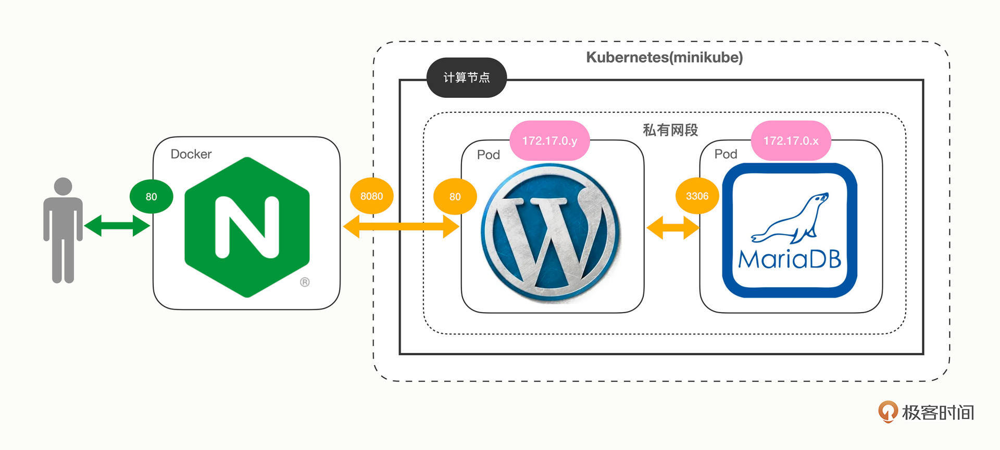
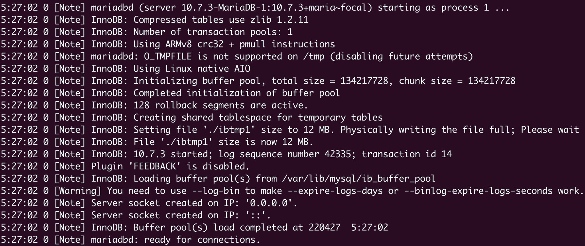
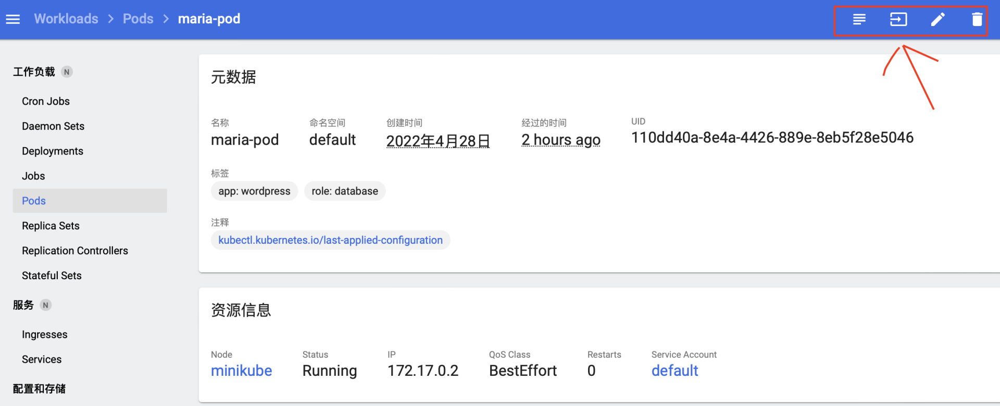
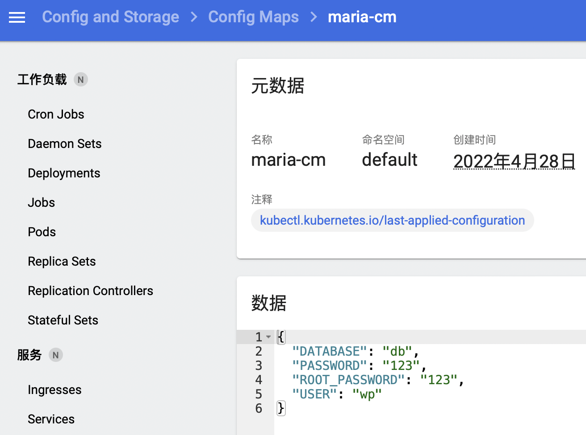
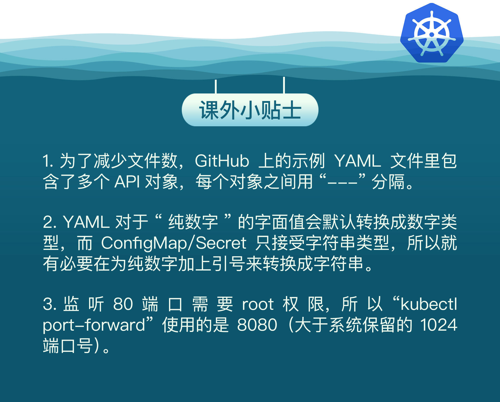

- 00 开篇词 迎难而上，做云原生时代的弄潮儿.md
- 00 课前准备 动手实践才是最好的学习方式.md
- 01 初识容器：万事开头难.md
- 02 被隔离的进程：一起来看看容器的本质.md
- 03 容器化的应用：会了这些你就是Docker高手.md
- 04 创建容器镜像：如何编写正确、高效的Dockerfile.md
- 05 镜像仓库：该怎样用好Docker Hub这个宝藏.md
- 06 打破次元壁：容器该如何与外界互联互通.md
- 07 实战演练：玩转Docker.md
- 08 视频：入门篇实操总结.md
- 09 走近云原生：如何在本机搭建小巧完备的Kubernetes环境.md
- 10 自动化的运维管理：探究Kubernetes工作机制的奥秘.md
- 11 YAML：Kubernetes世界里的通用语.md
- 12 Pod：如何理解这个Kubernetes里最核心的概念？.md
- 13 Job_CronJob：为什么不直接用Pod来处理业务？.md
- 14 ConfigMap_Secret：怎样配置、定制我的应用.md
- 15 实战演练：玩转Kubernetes（1）.md
- 16 视频：初级篇实操总结.md
- 17 更真实的云原生：实际搭建多节点的Kubernetes集群.md
- 18 Deployment：让应用永不宕机.md
- 19 Daemonset：忠实可靠的看门狗.md
- 20 Service：微服务架构的应对之道.md
- 21 Ingress：集群进出流量的总管.md
- 22 实战演练：玩转Kubernetes（2）.md
- 23 视频：中级篇实操总结.md
- 24 PersistentVolume：怎么解决数据持久化的难题？.md
- 25 PersistentVolume + NFS：怎么使用网络共享存储？.md
- 26 StatefulSet：怎么管理有状态的应用？.md
- 27 滚动更新：如何做到平滑的应用升级降级？.md
- 28 应用保障：如何让Pod运行得更健康？.md
- 29 集群管理：如何用名字空间分隔系统资源？.md
- 30 系统监控：如何使用Metrics Server和Prometheus？.md
- 31 网络通信：CNI是怎么回事？又是怎么工作的？.md
- 32 实战演练：玩转Kubernetes（3）.md
- 33 视频：高级篇实操总结.md
- 加餐 docker-compose：单机环境下的容器编排工具.md
- 加餐 谈谈Kong Ingress Controller.md
- 结束语 是终点，更是起点.md
15 实战演练：玩转Kubernetes（1）
你好，我是Chrono。
经过两个星期的学习，到今天我们的“初级篇”也快要结束了。
和之前的“入门篇”一样，在这次课里，我也会对前面学过的知识做一个比较全面的回顾，毕竟Kubernetes领域里有很多新名词、新术语、新架构，知识点多且杂，这样的总结复习就更有必要。
接下来我还是先简要列举一下“初级篇”里讲到的Kubernetes要点，然后再综合运用这些知识，演示一个实战项目——还是搭建WordPress网站，不过这次不是在Docker里，而是在Kubernetes集群里。
Kubernetes技术要点回顾
容器技术开启了云原生的大潮，但成熟的容器技术，到生产环境的应用部署的时候，却显得“步履维艰”。因为容器只是针对单个进程的隔离和封装，而实际的应用场景却是要求许多的应用进程互相协同工作，其中的各种关系和需求非常复杂，在容器这个技术层次很难掌控。
为了解决这个问题，容器编排（Container Orchestration）就出现了，它可以说是以前的运维工作在云原生世界的落地实践，本质上还是在集群里调度管理应用程序，只不过管理的主体由人变成了计算机，管理的目标由原生进程变成了容器和镜像。
而现在，容器编排领域的王者就是——Kubernetes。
Kubernetes源自Borg系统，它凝聚了Google的内部经验和CNCF的社区智慧，所以战胜了竞争对手Apache Mesos和Docker Swarm，成为了容器编排领域的事实标准，也成为了云原生时代的基础操作系统，学习云原生就必须要掌握Kubernetes。
（[10讲]）Kubernetes的Master/Node架构是它具有自动化运维能力的关键，也对我们的学习至关重要，这里我再用另一张参考架构图来简略说明一下它的运行机制（图片来源）：

Kubernetes把集群里的计算资源定义为节点（Node），其中又划分成控制面和数据面两类。
- 控制面是Master节点，负责管理集群和运维监控应用，里面的核心组件是apiserver、etcd、scheduler、controller-manager。
- 数据面是Worker节点，受Master节点的管控，里面的核心组件是kubelet、kube-proxy、container-runtime。
此外，Kubernetes还支持插件机制，能够灵活扩展各项功能，常用的插件有DNS和Dashboard。
为了更好地管理集群和业务应用，Kubernetes从现实世界中抽象出了许多概念，称为“API对象”，描述这些对象就需要使用YAML语言。
YAML是JSON的超集，但语法更简洁，表现能力更强，更重要的是它以“声明式”来表述对象的状态，不涉及具体的操作细节，这样Kubernetes就能够依靠存储在etcd里集群的状态信息，不断地“调控”对象，直至实际状态与期望状态相同，这个过程就是Kubernetes的自动化运维管理（[11讲]）。
Kubernetes里有很多的API对象，其中最核心的对象是“Pod”，它捆绑了一组存在密切协作关系的容器，容器之间共享网络和存储，在集群里必须一起调度一起运行。通过Pod这个概念，Kubernetes就简化了对容器的管理工作，其他的所有任务都是通过对Pod这个最小单位的再包装来实现的（[12讲]）。
除了核心的Pod对象，基于“单一职责”和“对象组合”这两个基本原则，我们又学习了4个比较简单的API对象，分别是Job/CronJob和ConfigMap/Secret。
- Job/CronJob对应的是离线作业，它们逐层包装了Pod，添加了作业控制和定时规则（[13讲]）。
- ConfigMap/Secret对应的是配置信息，需要以环境变量或者存储卷的形式注入进Pod，然后进程才能在运行时使用（[14讲]）。
和Docker类似，Kubernetes也提供一个客户端工具，名字叫“kubectl”，它直接与Master节点的apiserver通信，把YAML文件发送给RESTful接口，从而触发Kubernetes的对象管理工作流程。
kubectl的命令很多，查看自带文档可以用 api-resources、explain ，查看对象状态可以用 get、describe、logs ，操作对象可以用 run、apply、exec、delete 等等（[09讲]）。
使用YAML描述API对象也有固定的格式，必须写的“头字段”是“apiVersion”“kind”“metadata”，它们表示对象的版本、种类和名字等元信息。实体对象如Pod、Job、CronJob会再有“spec”字段描述对象的期望状态，最基本的就是容器信息，非实体对象如ConfigMap、Secret使用的是“data”字段，记录一些静态的字符串信息。
好了，“初级篇”里的Kubernetes知识要点我们就基本总结完了，如果你发现哪部分不太清楚，可以课后再多复习一下前面的课程加以巩固。
WordPress网站基本架构
下面我们就在Kubernetes集群里再搭建出一个WordPress网站，用的镜像还是“入门篇”里的那三个应用：WordPress、MariaDB、Nginx，不过当时我们是直接以容器的形式来使用它们，现在要改成Pod的形式，让它们运行在Kubernetes里。
我还是画了一张简单的架构图，来说明这个系统的内部逻辑关系：

从这张图中你可以看到，网站的大体架构是没有变化的，毕竟应用还是那三个，它们的调用依赖关系也必然没有变化。
那么Kubernetes系统和Docker系统的区别又在哪里呢？
关键就在对应用的封装和网络环境这两点上。
现在WordPress、MariaDB这两个应用被封装成了Pod（由于它们都是在线业务，所以Job/CronJob在这里派不上用场），运行所需的环境变量也都被改写成ConfigMap，统一用“声明式”来管理，比起Shell脚本更容易阅读和版本化管理。
另外，Kubernetes集群在内部维护了一个自己的专用网络，这个网络和外界隔离，要用特殊的“端口转发”方式来传递数据，还需要在集群之外用Nginx反向代理这个地址，这样才能实现内外沟通，对比Docker的直接端口映射，这里略微麻烦了一些。
WordPress网站搭建步骤
了解基本架构之后，接下来我们就逐步搭建这个网站系统，总共需要4步。
第一步当然是要编排MariaDB对象，它的具体运行需求可以参考“入门篇”的实战演练课，这里我就不再重复了。
MariaDB需要4个环境变量，比如数据库名、用户名、密码等，在Docker里我们是在命令行里使用参数 --env，而在Kubernetes里我们就应该使用ConfigMap，为此需要定义一个 maria-cm 对象：
apiVersion: v1
kind: ConfigMap
metadata:
name: maria-cm
data:
DATABASE: 'db'
USER: 'wp'
PASSWORD: '123'
ROOT_PASSWORD: '123'
然后我们定义Pod对象 maria-pod，把配置信息注入Pod，让MariaDB运行时从环境变量读取这些信息：
apiVersion: v1
kind: Pod
metadata:
name: maria-pod
labels:
app: wordpress
role: database
spec:
containers:
- image: mariadb:10
name: maria
imagePullPolicy: IfNotPresent
ports:
- containerPort: 3306
envFrom:
- prefix: 'MARIADB_'
configMapRef:
name: maria-cm
注意这里我们使用了一个新的字段“envFrom”，这是因为ConfigMap里的信息比较多，如果用 env.valueFrom 一个个地写会非常麻烦，容易出错，而 envFrom 可以一次性地把ConfigMap里的字段全导入进Pod，并且能够指定变量名的前缀（即这里的 MARIADB_），非常方便。
使用 kubectl apply 创建这个对象之后，可以用 kubectl get pod 查看它的状态，如果想要获取IP地址需要加上参数 -o wide ：
kubectl apply -f mariadb-pod.yml
kubectl get pod -o wide
现在数据库就成功地在Kubernetes集群里跑起来了，IP地址是“172.17.0.2”，注意这个地址和Docker的不同，是Kubernetes里的私有网段。
接着是第二步，编排WordPress对象，还是先用ConfigMap定义它的环境变量：
apiVersion: v1
kind: ConfigMap
metadata:
name: wp-cm
data:
HOST: '172.17.0.2'
USER: 'wp'
PASSWORD: '123'
NAME: 'db'
在这个ConfigMap里要注意的是“HOST”字段，它必须是MariaDB Pod的IP地址，如果不写正确WordPress会无法正常连接数据库。
然后我们再编写WordPress的YAML文件，为了简化环境变量的设置同样使用了 envFrom：
apiVersion: v1
kind: Pod
metadata:
name: wp-pod
labels:
app: wordpress
role: website
spec:
containers:
- image: wordpress:5
name: wp-pod
imagePullPolicy: IfNotPresent
ports:
- containerPort: 80
envFrom:
- prefix: 'WORDPRESS_DB_'
configMapRef:
name: wp-cm
接着还是用 kubectl apply 创建对象，kubectl get pod 查看它的状态：
kubectl apply -f wp-pod.yml
kubectl get pod -o wide

第三步是为WordPress Pod映射端口号，让它在集群外可见。
因为Pod都是运行在Kubernetes内部的私有网段里的，外界无法直接访问，想要对外暴露服务，需要使用一个专门的 kubectl port-forward 命令，它专门负责把本机的端口映射到在目标对象的端口号，有点类似Docker的参数 -p，经常用于Kubernetes的临时调试和测试。
下面我就把本地的“8080”映射到WordPress Pod的“80”，kubectl会把这个端口的所有数据都转发给集群内部的Pod：
kubectl port-forward wp-pod 8080:80 &

注意在命令的末尾我使用了一个 & 符号，让端口转发工作在后台进行，这样就不会阻碍我们后续的操作。
如果想关闭端口转发，需要敲命令 fg ，它会把后台的任务带回到前台，然后就可以简单地用“Ctrl + C”来停止转发了。
第四步是创建反向代理的Nginx，让我们的网站对外提供服务。
这是因为WordPress网站使用了URL重定向，直接使用“8080”会导致跳转故障，所以为了让网站正常工作，我们还应该在Kubernetes之外启动Nginx反向代理，保证外界看到的仍然是“80”端口号。（这里的细节和我们的课程关系不大，感兴趣的同学可以留言提问讨论）
Nginx的配置文件和[第7讲]基本一样，只是目标地址变成了“127.0.0.1:8080”，它就是我们在第三步里用 kubectl port-forward 命令创建的本地地址：
server {
listen 80;
default_type text/html;
location / {
proxy_http_version 1.1;
proxy_set_header Host $host;
proxy_pass http://127.0.0.1:8080;
}
}
然后我们用 docker run -v 命令加载这个配置文件，以容器的方式启动这个Nginx代理：
docker run -d --rm \
--net=host \
-v /tmp/proxy.conf:/etc/nginx/conf.d/default.conf \
nginx:alpine

有了Nginx的反向代理之后，我们就可以打开浏览器，输入本机的“127.0.0.1”或者是虚拟机的IP地址（我这里仍然是“http://192.168.10.208”），看到WordPress的界面：

你也可以在Kubernetes里使用命令 kubectl logs 查看WordPress、MariaDB等Pod的运行日志，来验证它们是否已经正确地响应了请求：

使用Dashboard管理Kubernetes
到这里WordPress网站就搭建成功了，我们的主要任务也算是完成了，不过我还想再带你看看Kubernetes的图形管理界面，也就是Dashboard，看看不用命令行该怎么管理Kubernetes。
启动Dashboard的命令你还记得吗，在第10节课里讲插件的时候曾经说过，需要用minikube，命令是：
minikube dashboard
它会自动打开浏览器界面，显示出当前Kubernetes集群里的工作负载：

点击任意一个Pod的名字，就会进入管理界面，可以看到Pod的详细信息，而右上角有4个很重要的功能，分别可以查看日志、进入Pod内部、编辑Pod和删除Pod，相当于执行 logs、exec、edit、delete 命令，但要比命令行要直观友好的多：

比如说，我点击了第二个按钮，就会在浏览器里开启一个Shell窗口，直接就是Pod的内部Linux环境，在里面可以输入任意的命令，无论是查看状态还是调试都很方便：

ConfigMap/Secret等对象也可以在这里任意查看或编辑：

Dashboard里的可操作的地方还有很多，这里我只是一个非常简单的介绍。虽然你也许已经习惯了使用键盘和命令行，但偶尔换一换口味，改用鼠标和图形界面来管理Kubernetes也是件挺有意思的事情，有机会不妨尝试一下。
小结
好了，作为“初级篇”的最后一节课，今天我们回顾了一下Kubernetes的知识要点，我还是画一份详细的思维导图，帮助你课后随时复习总结。

这节课里我们使用Kubernetes搭建了WordPress网站，和第7讲里的Docker比较起来，我们应用了容器编排技术，以“声明式”的YAML来描述应用的状态和它们之间的关系，而不会列出详细的操作步骤，这就降低了我们的心智负担——调度、创建、监控等杂事都交给Kubernetes处理，我们只需“坐享其成”。
虽然我们朝着云原生的方向迈出了一大步，不过现在我们的容器编排还不够完善，Pod的IP地址还必须手工查找填写，缺少自动的服务发现机制，另外对外暴露服务的方式还很原始，必须要依赖集群外部力量的帮助。
所以，我们的学习之旅还将继续，在接下来的“中级篇”里，会开始研究更多的API对象，来解决这里遇到的问题。
课下作业
最后是课下作业时间，给你留两个动手题：
- MariaDB、WordPress现在用的是ConfigMap，能否改用Secret来实现呢？
- 你能否把Nginx代理转换成Pod的形式，让它在Kubernetes里运行呢？
期待能看到你动手体验后的想法，如果觉得有帮助，欢迎分享给自己身边的朋友一起学习。
下节课就是视频演示的操作课了，我们下节课再见。

© 2019 - 2023 Liangliang Lee. Powered by Vert.x and hexo-theme-book.